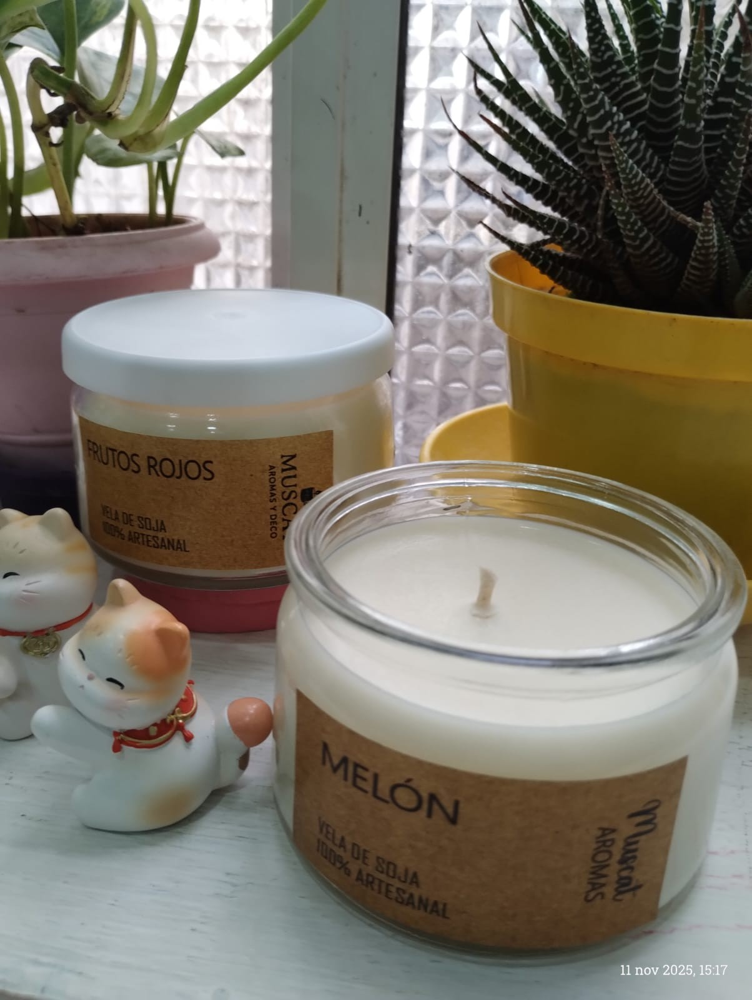
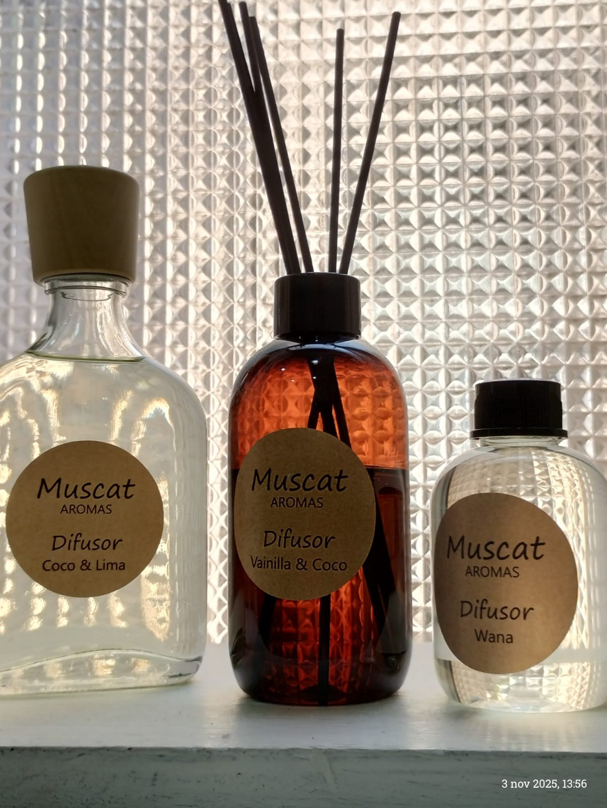
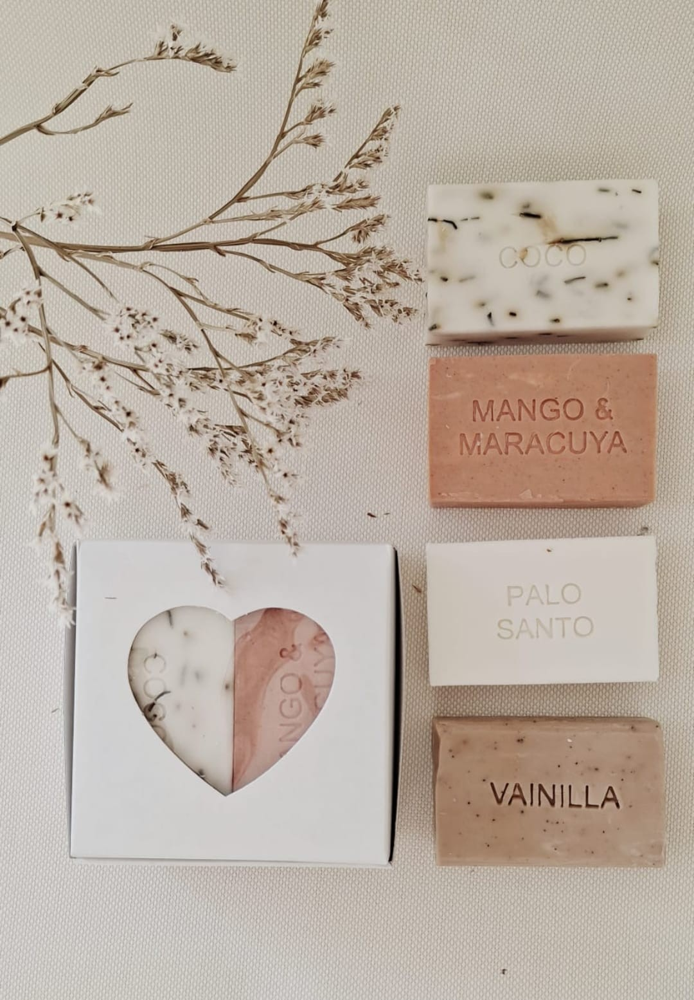
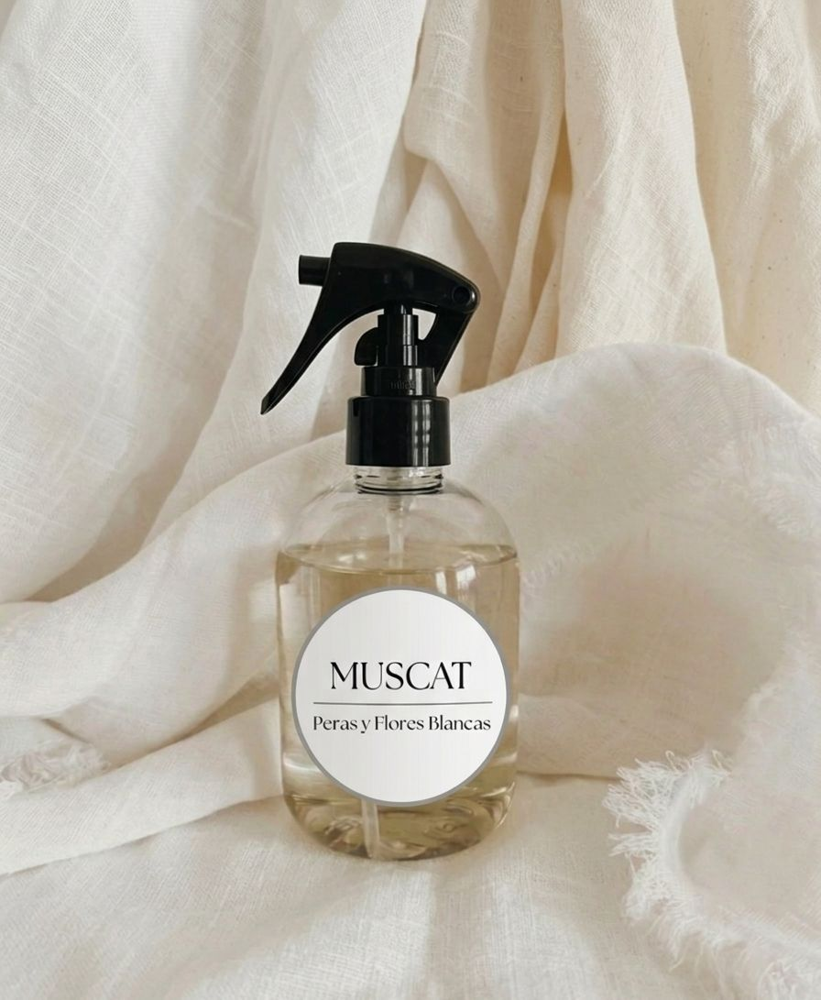

Vela Lolo 180 grs

Lolo es una vela de 180 grs, un producto hecho a mano con cera de soja orgánica que no libera toxinas durante su combustión.
Las velas de este material, duran el doble que las comunes de parafina
Hola, soy Claudia y te cuento sobre mis Velas de Soja y Difusores de Ambientes.
Mis Velas de Soja estan elaboradas con cera de soja natural y perfumadas con esencias que, al encenderlas, crean una atmosfera calida y liberan aromas envolventes.
Los Difusores de Ambientes utilizan varillas de ratan para expandirdeliciosas fragancias de forma continua y sutil, llena tu espacio de bienestar.
Tanto mis velas como mis difusores estan pensados para que puedas crear tu propio refugio de calma y armonia.
Te invito a descubrir la magia de Muscat Aromas!

Lolo es una vela de 180 grs, un producto hecho a mano con cera de soja orgánica que no libera toxinas durante su combustión.
Las velas de este material, duran el doble que las comunes de parafina

Envase PET de 250 ml con tapa difusora, incluye varillas de rattán negras o color madera que aseguran una difusión prolongada, manteniendo tus ambientes siempre con tu aroma preferido.

Jabones artesanales 95 grs con aceite de coco. Limpia delicadamente la piel de todo el cuerpo dejándola suave y perfumada. La caja contiene 4 jabones a elección.

Cada vaporización envuelve tus telas en una fragancia única que despierta emociones y evoca recuerdos. Creando una atmósfera que te identifica.